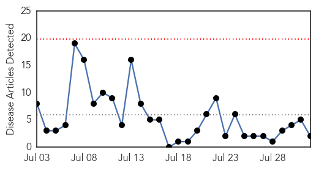
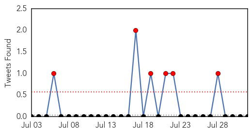

Influenza
30-Day Web Trend
1 alerts, 0 warnings
30-Day Twitter Trend
1 alerts, 0 warnings
Article Locations

Article Confidences
Top Articles:
- 0.995
- News Scan for Jul 31, 2015
- 0.915
- Six cases of potentially fatal Eastern Encephalitis confirmed in Texas, one in Liberty County
- 0.882
- The Top 6 Reasons Why Parents Are Choosing Not To Vaccinate Their Kids
- 0.786
- Two cases of avian influenza confirmed in Western Cape
- 0.751
- July 31, 2015 Archives
- 0.576
- Mississippi Prepares for Avian Influenza
Top Tweets:
-
No tweets found for Aug 01, 2015
Cholera
30-Day Web Trend
0 alerts, 0 warnings

30-Day Twitter Trend
6 alerts, 0 warnings

Article Locations
Article Confidences

Top Articles:
Top Tweets:
-
No tweets found for Aug 01, 2015